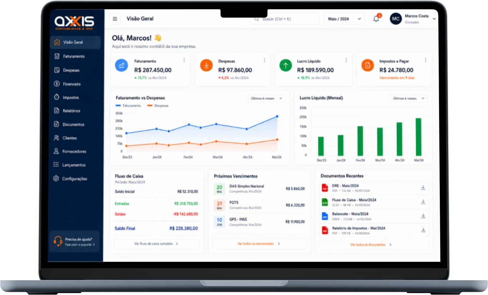

Rotina organizada
Para empresas com operação mais enxuta que precisam manter contabilidade, fiscal e obrigações em ordem.
- Contabilidade mensal
- Apuração de impostos
- Entrega de obrigações
- Atendimento digital
A Axxis une tecnologia, organização e atendimento próximo para deixar sua contabilidade simples, segura e pronta para acompanhar o ritmo do seu negócio.
Atendimento humano
com experiência digital de ponta a ponta.
Comece, migre ou reorganize sua contabilidade com acompanhamento em cada etapa.
Planejamento inicial, documentos e direcionamento para começar com uma estrutura mais organizada.
Transição acompanhada para trazer documentos, rotinas e histórico com menos atrito.
Análise do novo momento e apoio na mudança de estrutura da empresa.
Fiscal, contábil, documentos e orientação em uma rotina digital e próxima.
Menos informação solta, mais clareza sobre o que precisa ser feito e por quê.



A equipe conduz a entrada, organiza o cenário e mantém você informado em cada etapa.
Conhecer o processo →Entendemos atividade, regime, volume, equipe e momento atual.
Você recebe um escopo coerente com a complexidade da operação.
Organizamos acessos, documentos e comunicação para iniciar a rotina.
Calendário, orientações e informações passam a fazer parte do dia a dia.
Os formatos abaixo representam níveis de acompanhamento. A proposta final considera a realidade da empresa.
Para empresas com operação mais enxuta que precisam manter contabilidade, fiscal e obrigações em ordem.
Para prestadores de serviços em expansão que precisam de visão e orientação mais próxima.
Para operações com demandas, volume ou processos que pedem um desenho próprio.

Contabilidade não precisa ser apenas uma obrigação. Quando a informação fica clara, ela vira ferramenta para crescer com segurança.
Conheça os pontos principais e fale com a equipe para analisar o seu cenário.
Conversar com especialistaO foco principal do site está em empresas e profissionais que vendem serviços. A equipe pode avaliar operações próximas a esse perfil e confirmar o melhor formato de atendimento.
A Axxis orienta os documentos, organiza a entrada da empresa e acompanha a transição para reduzir ruído na rotina. O escopo final depende do cenário atual da empresa.
Sim. A tecnologia centraliza dados, documentos e tarefas, enquanto o contato e as orientações são conduzidos por profissionais da equipe.
A proposta é analisar a realidade da operação e orientar o enquadramento dentro das possibilidades aplicáveis, considerando atividade, faturamento, estrutura e demais informações da empresa.
Nesta versão, os planos representam níveis de acompanhamento. A proposta final pode variar conforme regime, volume de notas, folha, quantidade de sócios e complexidade da operação.
.webp)
Conte sobre sua empresa. A equipe Axxis organiza o cenário e apresenta o formato mais adequado para sua rotina.